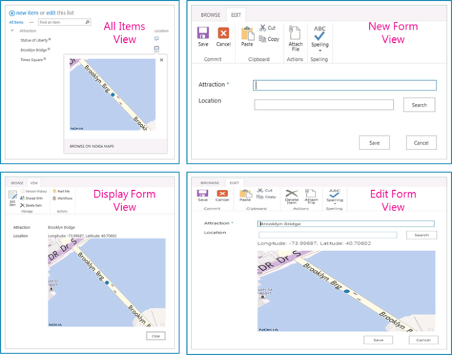

SharePoint 2013 introduces a new field type named Geolocation that enables you to annotate SharePoint lists with location information. In columns of type Geolocation, you can enter location information as a pair of latitude and longitude coordinates in decimal degrees or retrieve the coordinates of the user's current location from the browser if it implements the W3C Geolocation API. For more information about Geolocation field, see Integrating location and map functionality in SharePoint 2013. The Geolocation field type is not available in the default content type of any list or document library in SharePoint 2013. To make this field type available, you need to develop and deploy custom field type controls to your SharePoint sites. The Geolocation field is not user-creatable by default in SharePoint 2013; you must programmatically add the Geolocation field type to SharePoint. For more information about how to add a Geolocation column programmatically, see How to: Add a Geolocation column to a list programmatically in SharePoint 2013. You can render four SharePoint list views (View, DisplayForm, EditForm, and NewForm) from Nokia maps, as shown in Figure 1.
Figure 1. Custom views of new custom field

After the Geolocation field type is added to SharePoint 2013 Preview, it renders maps by using Bing Maps. By default, the Geolocation field can render only with Bing Maps. You can create a custom field based on Geolocation that provides its own rendering from Nokia Maps. Custom rendering is provided through the JSLink property in the client-side rendering framework, which is introduced in Microsoft SharePoint 2013 Preview. For more information about client-side rendering, see How to: Customize a field type using client-side rendering. This code sample demonstrates how to create a custom field by using Geolocation as parent, and also demonstrates how field values can be shown on Nokia Maps.
This sample requires the following:
The sample contains the following:
Follow these steps to configure the sample.
Follow these steps to run and test the sample.
The following table lists common configuration and environment errors that prevent the sample from running or deploying properly and how to solve them.
| Problem | Solution |
|---|---|
| Search box does not appear for field created from the extended Geolocation Nokia field type. | Clear browser cache. |
| Error message: Geolocation API is not supported. |
The Geolocation feature is supported only for browsers in which W3C Geolocation API is enabled. |
First version: July 16, 2012